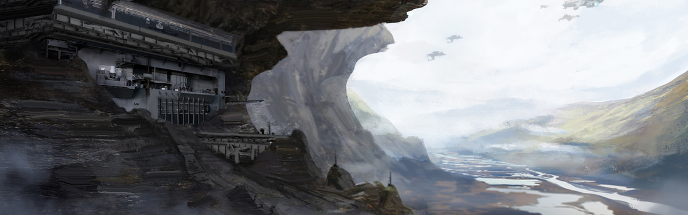

SYSTEM: NEXUS

Excurs - System: Nexus
UDS-2445-3-09, Hathor, das „Wegekreuz des Verbrechens“: Das Nexus System hatte im Laufe seiner langen Geschichte viele Namen. Nexus ist nur der letzte und eindeutigste Spitzname dieser Sammlung. An einem strategisch sehr wichtigen Knotenpunkt gelegen und mit mehreren Sprungpunkten ist Nexus ein umgangssprachlicher Name für das System, der im 28. Jahrhundert zum ersten Mal in Bezug auf seine Rolle als Verbindungsstelle mehrerer gesetzloser Systeme verwendet wurde.
Als das UEE das System im Jahr 2931 für sich beanspruchte, startete die Regierung in einem Versuch, seine Assoziation mit Piraten auszulöschen, eine offizielle Initiative zur Verwendung eines älteren Namens: Hathor. Allerdings war der Name Nexus bereits zu sehr im Sprachgebrauch des Empires verwurzelt, weshalb die Bemühungen überall nur verspottet wurden. Schlussendlich gab das UEE nach und erkannte das System offiziell als Nexus an. Tatsächlich war sein Name immer ein deutlicher Hinweis auf die zu dieser Zeit vorherrschenden Zustände des Systems.
Die erste UNE Beurteilung bestätigte dieses Potential, wies aber auch auf ein Problem hin. Das System konnte nur durch das Cathcart System erreicht werden, das zu dieser Zeit ein reines für das Militär zugängliches System war. Anstatt die Öffnung Cathcarts für den Zivilverkehr zu riskieren, versuchte das Militär anfangs, selbst Nutzen aus dem System zu ziehen. Sie terraformten Nexus IV und führten sogar Terraforming-Experimente auf dem Smog-Planeten Nexus II durch.
Unglücklicherweise musste die Regierung zu dieser Zeit einem immensen Budgetdefizit ins Auge blicken und die kostspielige Entwicklung von Nexus wurde schnell auf das Abstellgleis geschoben. Das Militär war jedoch noch immer strikt dagegen, Zivilisten Zugang zum Cathcart System zu gewähren. Es musste also ein Kompromiss ausgearbeitet werden. Indem nur einzelnen Unternehmen eingeschränkter Zugang gewährt wurde, konnten strenge Kontrollen beibehalten werden. Die UNE verkauften die Bergbaurechte an Nexus also für eine stattliche Summe an die Hathor Group. Der Erlös wurde dazu genutzt, das Haushaltsloch zu stopfen. Einige Historiker glauben, dass diese Entscheidung der herrschenden Universalisten-Partei half, ihre Mehrheit in den eng ausgegangenen Wahlen in 2468 zu behalten.

„Das ist das Problem, nich? Lauf lang genug auf Nexus rum und du weißt nicht, wenn du treff͛n wirst. Und du kannst dir nie sicher sein, wer davon der Schlimmste is. Wie ich zu sagen pflege, alle Wege führen nach Nexus und auf allen davon werdet ihr wahrscheinlich ausgeraubt.“ – Telly „Tubs“ Garson, Interview auf Nexus: Kreuzung des Verbrechens, 2925
Als das UEE das System im Jahr 2931 für sich beanspruchte, startete die Regierung in einem Versuch, seine Assoziation mit Piraten auszulöschen, eine offizielle Initiative zur Verwendung eines älteren Namens: Hathor. Allerdings war der Name Nexus bereits zu sehr im Sprachgebrauch des Empires verwurzelt, weshalb die Bemühungen überall nur verspottet wurden. Schlussendlich gab das UEE nach und erkannte das System offiziell als Nexus an. Tatsächlich war sein Name immer ein deutlicher Hinweis auf die zu dieser Zeit vorherrschenden Zustände des Systems.
UDS-2445-3-09
Nexus wurde am 9. März 2445 von Dominic Thapa entdeckt, einem UNE-Navypiloten, der das damals vom Militär als geheim eingestufte Cathcart System für neue Sprungpunkte sondierte. Es war das Militär, das dem System seinen ersten Namen gab – UDS-2445-3-09. Pfadfinder betraten das System nur kurze Zeit später und fanden einen bläulich-weißen Typ-A Hauptreihenstern, fünf Planeten und einen sehr mineralreichen Asteroidengürtel.Die erste UNE Beurteilung bestätigte dieses Potential, wies aber auch auf ein Problem hin. Das System konnte nur durch das Cathcart System erreicht werden, das zu dieser Zeit ein reines für das Militär zugängliches System war. Anstatt die Öffnung Cathcarts für den Zivilverkehr zu riskieren, versuchte das Militär anfangs, selbst Nutzen aus dem System zu ziehen. Sie terraformten Nexus IV und führten sogar Terraforming-Experimente auf dem Smog-Planeten Nexus II durch.
Unglücklicherweise musste die Regierung zu dieser Zeit einem immensen Budgetdefizit ins Auge blicken und die kostspielige Entwicklung von Nexus wurde schnell auf das Abstellgleis geschoben. Das Militär war jedoch noch immer strikt dagegen, Zivilisten Zugang zum Cathcart System zu gewähren. Es musste also ein Kompromiss ausgearbeitet werden. Indem nur einzelnen Unternehmen eingeschränkter Zugang gewährt wurde, konnten strenge Kontrollen beibehalten werden. Die UNE verkauften die Bergbaurechte an Nexus also für eine stattliche Summe an die Hathor Group. Der Erlös wurde dazu genutzt, das Haushaltsloch zu stopfen. Einige Historiker glauben, dass diese Entscheidung der herrschenden Universalisten-Partei half, ihre Mehrheit in den eng ausgegangenen Wahlen in 2468 zu behalten.
Die Hathor Group
Die Hathor Group erwarb im Januar 2468 alle Schürfrechte am Nexus System. Es war ein neuartiger Vertrag, welcher den UNE Jahrhunderte später als Inspiration für etwas ganz Ähnliches im StantonSystem diente. Die darauf folgende mangelnde Aufsicht durch die Regierung und die Öffentlichkeit ermöglichten es der Hathor Group, das System nach ihrem Belieben zu gestalten. Der Einfluss der Firma war so omnipräsent, dass sich die astronomischen Karten aus dem 26. Jahrhundert darauf als Hathor System beziehen. Während Hathor an der Macht war, wurden nur wenige Gesetze durchgesetzt. Die Militärpräsenz im Nachbarsystem Cathcart hatte abgenommen, nachdem sich das System in eine Müllhalde verwandelte und solange Mineralien abgebaut und Profite erwirtschaftet wurden, kümmerte sich die Hathor Group nicht darum, was ihre Angestellten und Vertragspartner neben der Arbeit anstellten. Nexus wurde für sein Glücksspiel, ungezügelte Gewalt und zahlreiche illegalen Aktivitäten immer bekannter. Verbrechen wurden neben dem Bergbau zum einzigen rentablen Wirtschaftsmotor. Die illegalen Aktivitäten wurden durch die später entdeckten, drei weiteren Sprungpunkte und den erhöhten Verkehr von den unbeanspruchten Nachbarsystemen nur noch verstärkt. Gangs begannen damit, die Flugrouten zwischen den Sprungpunkten und Planeten zu belauern und jedes Schiff, das sie fanden, auszurauben. Dies, kombiniert mit dem Würgegriff der Hathor Group, brachte die meisten Leute davon ab, das System zu besuchen und die meisten Unternehmen entschieden sich dagegen, dort Betriebe aufzubauen. Währenddessen betrieb die Hathor Group weiterhin Raubbau auf Nexus III, Nexus IV und dem Elcibre Gürtel bis die Profitspanne begann, unter ihr aufgeblasenes Sicherheitsbudget zu fallen. Die Hathor Group verließ das System offiziell im Jahr 2672 und hinterließ ein unwirtliches Ödland, mit unzähligen Bergbau-Narben bei mangelnder ziviler Infrastruktur. Es sollte daher nicht überraschen, was als nächstes geschah.Das Wegekreuz des Verbrechens
Nachdem die Hathor Group das System verlassen hatte, stellte die von Bergbaustollen durchzogene Oberfläche von Lagos die perfekte Deckung für kriminelle Gruppen dar, die in das System kamen und dort Operationsbasen aufbauten. Die Bevölkerung des Systems schwoll an und ließ manche glauben, es könnte sogar Spider als Zentrum der Unterwelt ablösen. Während dieser Ära wurde der Name Nexus zum ersten Mal verwendet, um seine Rolle als krimineller Mittelpunkt zu beschreiben. Er verdiente sich in dieser Zeit auch den Zusatz: das „Wegekreuz des Verbrechens.“ Für mehrere Jahrzehnte stellte das UEE nur minimale Ressourcen bereit, um die illegalen Aktivitäten in dem System einzudämmen. Dann, im Jahr 2931, als sich Dean Kellars berühmter und namensgebender Run in das System ergoss, versuchten die UEE-Behörden, ihre Kontrolle wieder geltend zu machen. Sie waren schockiert, als sie feststellten, dass sich die Kriminellen nicht nur weigerten, zurückzuweichen, sondern auch nicht zögerten, das Feuer auf die Ordnungskräfte zu eröffnen. Nachdem Kellars Run schließlich zu Ende ging, war das UEE von dieser Missachtung derart angestachelt, dass sie eine Bewegung zur Rückgewinnung von Nexus und der strategischen Trennung von dem problembehafteten Cluster gesetzloser Systeme starteten. Seitdem hat das UEE eine grundlegende Infrastruktur in Nexus errichtet, inklusive der Etablierung einer militärischen und einer Advocacy-Präsenz. Dennoch sind die Zustände in dem System bestenfalls als riskant zu bezeichnen. Die Schiffsrouten sind weitgehend sicher und sogar Unternehmer, die das System für Jahrhunderte gemieden hatten, begannen damit, dort wieder Betriebe aufzubauen. Allerdings sollten unternehmerische Schrottsammler darauf hingewiesen werden, dass, obwohl das UEE Fortschritte in dem System erzielt hat, der Kampf um die Kontrolle über Nexus noch immer anhält. Während das UEE mit der Entwurzelung etablierter Krimineller auf Nexus III erfolgreich war, gestaltete sich das auf Nexus IV (Lago) nicht so einfach und erfolgreich.Nexus I
Dieser Protoplanet umkreist den Stern des Systems so nah, dass er vollständig verkohlt ist. Dennoch hielt das die Hathor Group nicht davon ab, ihn auf Ressourcen zu scannen. Es wurde jedoch nichts von Wert gefunden, was niemanden überraschte.Nexus II
Nexus II zeichnet sich durch eine dichte, stickstoffreiche Atmosphäre aus. Anfangs nutzte das UEE Nexus II für Terraforming-Experimente mit einem Smogplaneten, allerdings schlugen alle Versuche, eine atmungsaktive Atmosphäre zu erhalten, fehl. Viele glauben, dass die Kosten für diese gescheiterten Experimente das UEE dazu zwangen, das System an die Hathor Group zu „verkaufen.“Nexus III
Diese von Natur aus bewohnbare Welt war einst der zentrale Knotenpunkt für die Hathor Group, bevor sich die Outlaws die verlassenen Fabriken aneignete. Als das UEE beschloss, das System zurückzuerobern, war Nexus III ihr erstes Ziel. Nach einem langwierigen Kampf um die Kontrolle über den Planeten, rückte das UEEMilitär ein und richtete eine dauerhafte militärische Präsenz ein. Heute ist der Planet auf militärisches Personal beschränkt und niemand ohne die entsprechende Genehmigung sollte versuchen, dort zu landen. Elcibre Gürtel Im 26. und 27. Jahrhundert hatte die Hathor Group diesen kargen Asteroidengürtel stark ausgebeutet. Neuste technologische Fortschritte haben jedoch erst kürzlich noch unentdeckte Ablagerungen wertvoller Mineralien gefunden.Nexus IV (Lago)
Der Name Lago stammt aus einem berühmten Video aus dem 26. Jahrhundert über eine fiktionale Outlaw Zufluchtsstätte. In den 2920ern wurde diese Vision Realität. Durch die mangelnde Präsenz des UEE konnten sich die Outlaws in so großer Zahl sammeln, wie man sie sonst nirgendwo außerhalb des Spider-Systems findet. Auf dem Papier hat das UEE große Fortschritte bei der Rückeroberung des Planeten erzielt. Es wurden eine Advocacy-Station, lokale Polizeikräfte und eine kleine Zivilbevölkerung aufgebaut. Den Familien von Soldaten, die ihren Dienst auf Nexus III ableisten, wurden extrem lukrative Grundstücksangebote gemacht, in der Hoffnung, den Planeten mit respektablen Bürgern besiedeln zu können. Trotz all dieser positiven Entwicklungen hat Lago noch immer seine Probleme. Die Siedlungen sind klein, eng und wegen ständiger Angriffe krimineller Banden, welche die Ortschaften für ihre eigenen Zwecke erobern möchten, stark verbarrikadiert. Auch der Nachschub ist häufig knapp. Diese und weitere Probleme machen Lago zwar zu einem verlockenden Ort für unternehmerische Schrottsammler, aber auch zu einem weniger idealen Platz zum Leben.Nexus V (Roter Gott)
Ein Gasgigant, den die Einheimischen aufgrund seiner roten und dunkelbraunen wirbelnden Farben ‚Roter Gott͚ nennen. Einige Quellen behaupten, der Name ginge auf die ‚Sang Gestas͚ zurück, einer geheimnisvollen Gruppe von Outlaws im Lago System, die glauben, der Planet besäße mysteriöse Kräfte. Reisewarnung Auch wenn es große Fortschritte bei der Wiederherstellung von Recht und Ordnung auf Nexus gab, sollte jeder, der das System betritt, daran denken, dass es drei „S“s für ein sicheres Reisen gibt: Stay (bleibe) in der dir zugewiesenen Spur, Scanne deine Umgebung und Schilde hoch!
Reisewarnung
Ein Flüstern im Wind
„Der heutige Tag markiert einen stolzen Moment in der Geschichte. Denn heute lassen wir uns auf eine Partnerschaft mit der Regierung ein, um unser stetig wachsendes Territorium weiterzuentwickeln. Die Hathor Group und die UNE haben mit diesem System noch einiges vor.“ – Jela Martinez, CEO der Hathor Group, Pressemeldung, 2468„Das ist das Problem, nich? Lauf lang genug auf Nexus rum und du weißt nicht, wenn du treff͛n wirst. Und du kannst dir nie sicher sein, wer davon der Schlimmste is. Wie ich zu sagen pflege, alle Wege führen nach Nexus und auf allen davon werdet ihr wahrscheinlich ausgeraubt.“ – Telly „Tubs“ Garson, Interview auf Nexus: Kreuzung des Verbrechens, 2925